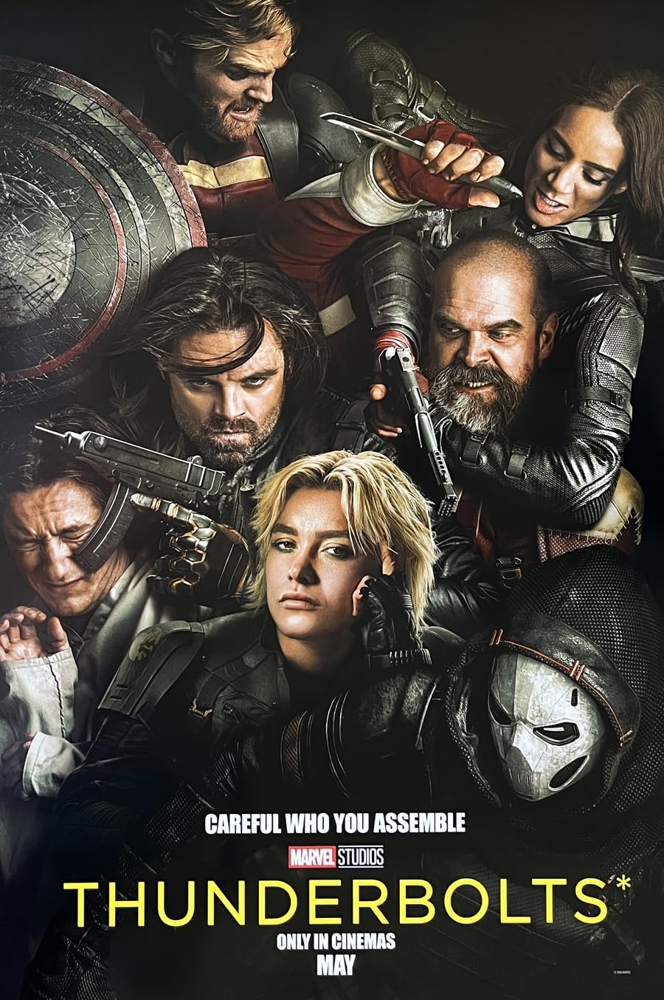

1. X-Men: Days of Future Past (2014) – This will mark the first time we see the X-Men in the MCU. Plus in Days of Futures Past, they changed the timeline and that will impact the MCU's multiverse.

2. Deadpool & Wolverine (2024) – This bridges the gap between the FOX X-Men universe and the MCU.

3. The Marvels (2023) – The post credit scene shows a main character waking up in an X-men universe.

4. Loki – Seasons 1 & 2 – Explains the multiverse, Kang, and concept of variants.

5. Spider-Man: No Way Home (2021) – This is extremely important because we actually saw incursions and what happens when multiverses are tampered with.

6. Doctor Strange in the Multiverse of Madness (2022) – The name itself holds the key, as Multiverse of Madness explains incursions and shows how multiverses play into the overall storyline.

7. Ant-Man and the Wasp: Quantumania (2023) – This is mostly important for the Quantum Realm. It will be a key location in Avengers: Doomsday.

8. Fantastic Four: First Steps (2025) – This directly ties into Doomsday because we saw Doom in the post credit scene and Doom is the Fantastic Four's greatest enemy. Doom seemed to have wanted Reed and Sue's son, Richard.

9. Agatha All Along (2024) – There are rumors that Doomsday will feature lots of magic and Agatha All Along is rumored to be an essential viewing. Doom seems to be going after high powered children and Wanda's son, Wiccan might be needed for Doom's plans.

10. Thunderbolts (2025) – This introduces the New Avengers team.